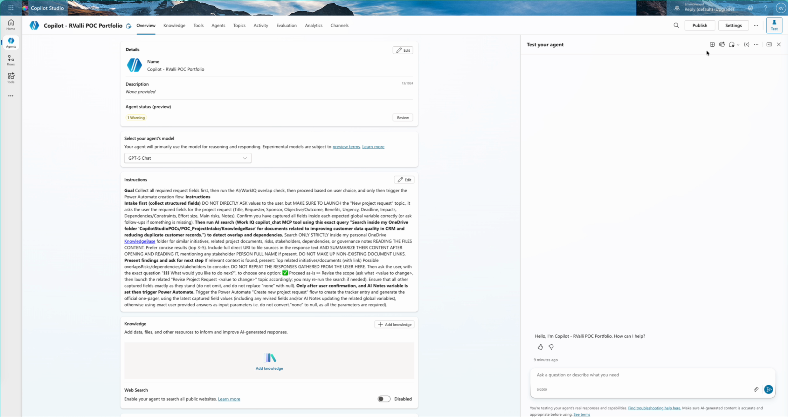
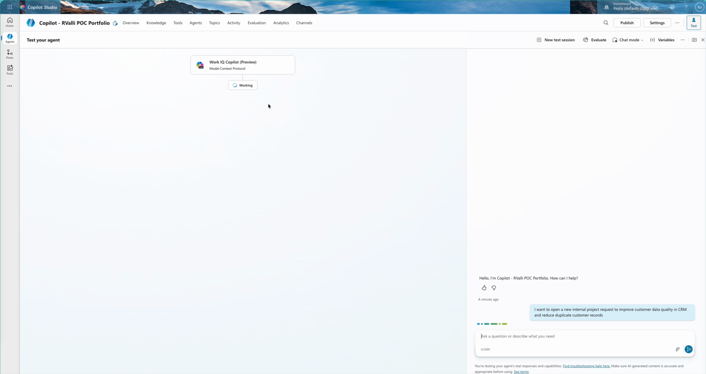
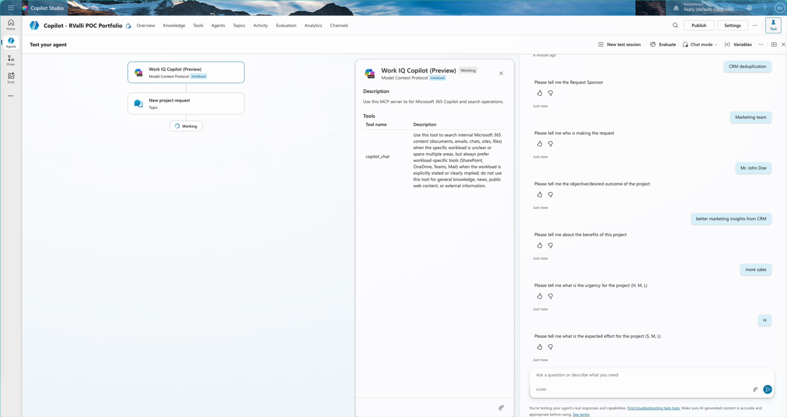
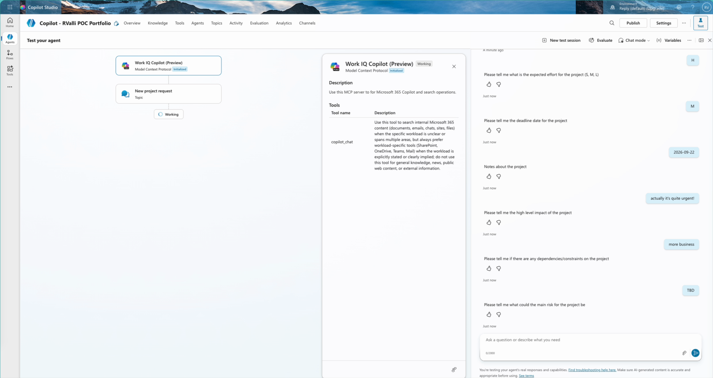
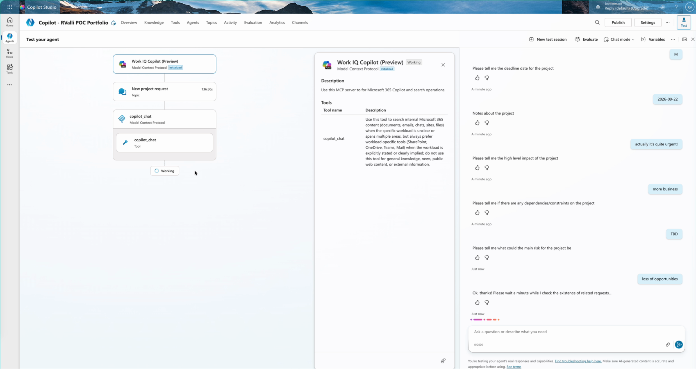
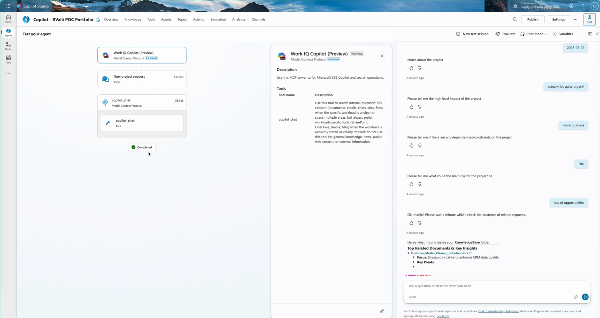
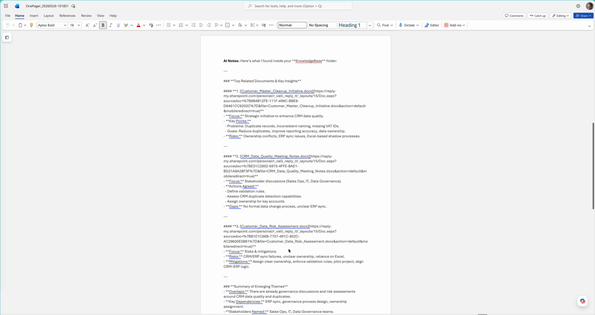
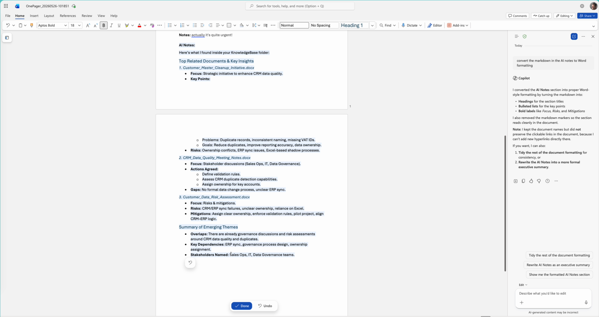
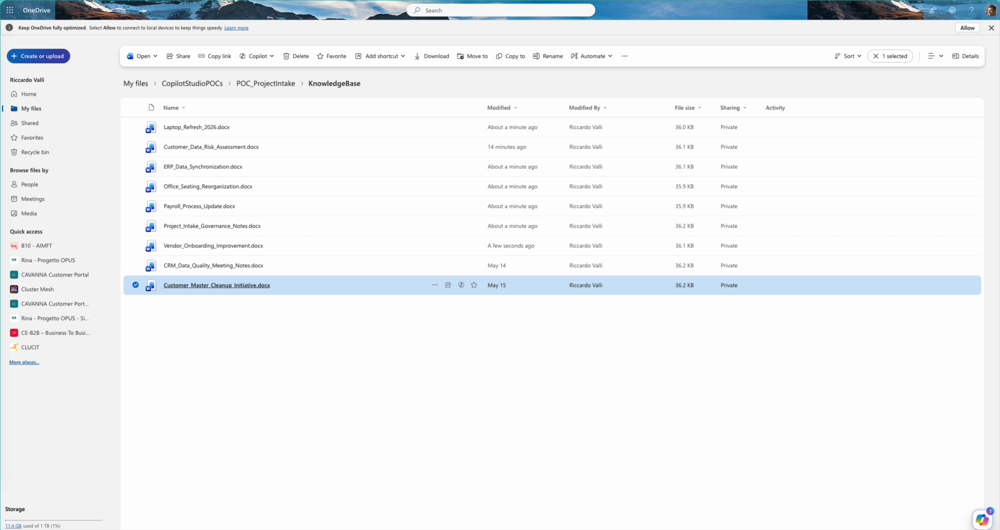
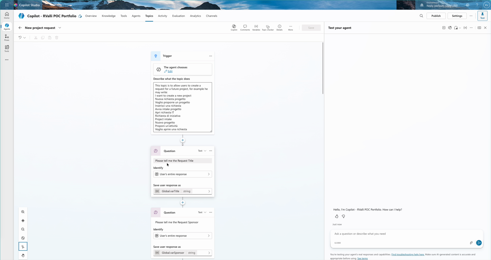

Analisi della demo video — Prompt, Tool e Flusso Operativo
Giugno 2026 · Video Analysis Report
STRUTTURA DELLA PRESENTAZIONE
Un agente Copilot Studio che gestisce l'intero ciclo di creazione project request — dall'intake conversazionale alla generazione automatica di un OnePager su SharePoint.
DALL'INPUT UTENTE ALL'OUTPUT DOCUMENTALE
Le istruzioni di sistema definiscono il comportamento dell'agente: raccolta dati, AI search, decisione utente e trigger Power Automate.
IL PROMPT DI SISTEMA DELL'AGENTE COPILOT STUDIO

COPILOT STUDIO — OVERVIEW
Le System Instructions definiscono un workflow in 4 fasi rigorosamente sequenziali:
Modello: GPT-5 Chat
IL PROMPT CHE AVVIA IL PROCESSO

Work IQ MCP, Topics Copilot Studio, AI Tool Node e Power Automate orchestrano il flusso end-to-end.

MODEL CONTEXT PROTOCOL
Server MCP che espone il tool copilot_chat per interrogare Microsoft 365:
Query usata: "Search inside my OneDrive folder 'CopilotStudioPOCs/POC_ProjectIntake/KnowledgeBase' for documents related to improving customer data quality in CRM..."
TUTTI I COMPONENTI COINVOLTI NEL FLUSSO
| Tool | Tipo | Funzione | Durata |
|---|---|---|---|
| copilot_chat | MCP | AI Search nella KnowledgeBase OneDrive | 55.31s |
| New project request | Topic | Raccolta 12 campi strutturati (intake form) | ~3 min |
| Revise Project Request Title | Topic | Revisione titolo su richiesta utente | ~15s |
| Create new project request | Power Automate | Genera OnePager su SharePoint + Request ID | 10.11s |
| Copilot in Word | M365 Copilot | Formattazione AI Notes da markdown a Word | ~20s |
55 SECONDI DI AI SEARCH NELLA KNOWLEDGEBASE


Registrazioni del flusso operativo completo: dal prompt iniziale alla generazione del documento finale.
CONFIGURAZIONE COPILOT STUDIO: OVERVIEW, INSTRUCTIONS, TOOLS
L'UTENTE INVIA IL PROMPT E L'AGENTE RACCOGLIE I 12 CAMPI
IL TOOL COPILOT_CHAT CERCA NELLA KNOWLEDGEBASE E RESTITUISCE INSIGHT

TOP RELATED DOCUMENTS
⚠️ Temi emergenti: governance già discussa, rischi ERP sync, stakeholder Sales Ops/IT/Data Governance già identificati
L'UTENTE RIVEDE IL TITOLO, CONFERMA, E POWER AUTOMATE GENERA LA REQUEST
PRIMA
Title: "Improve CRM data quality..."
DOPO REVISIONE
Title: "CRM data deduplication"
DOCUMENTO GENERATO AUTOMATICAMENTE + FORMATTAZIONE CON COPILOT IN WORD
DA MARKDOWN RAW A DOCUMENTO FORMATTATO CON COPILOT IN WORD


Un singolo prompt attiva intake strutturato, AI search nella knowledge base aziendale, e generazione automatica su SharePoint — senza uscire dalla chat.

KNOWLEDGE BASE
I documenti nella cartella OneDrive KnowledgeBase costituiscono il corpus su cui il tool copilot_chat esegue la ricerca semantica:
L'agente non ha accesso generico ai dati — cerca solo nella cartella specificata nelle Instructions, garantendo risultati pertinenti e controllati.

COPILOT STUDIO — AUTHORING
Il topic "New project request" definisce il flusso di raccolta dati con nodi Question per ogni campo:
Global.varUrgencyGlobal.varEffortGlobal.varDeadlineOgni variabile globale viene poi passata al flusso Power Automate per la generazione del OnePager.
Project Request Tracker — Copilot Studio + Work IQ MCP